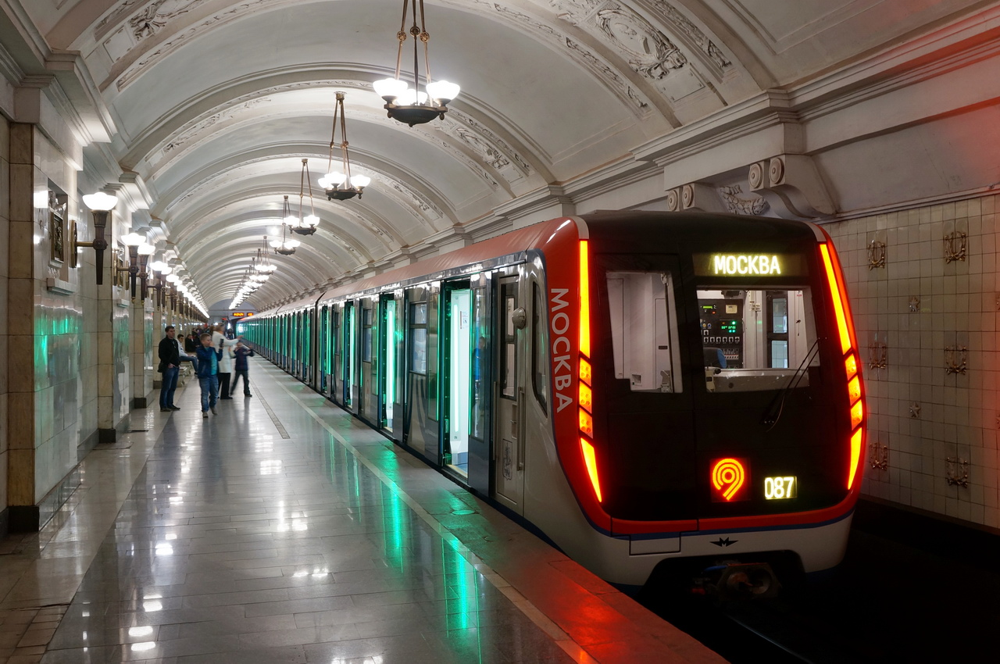

Московский метрополитен
Первая линия — Сокольническая — открылась 15 мая 1935 года, в момент запуска насчитывала 13 станций,
имела длину 11,2 км и шла от станции «Сокольники» до станции «Охотный Ряд» с вилочным ответвлением на
«Парк культуры» и «Смоленскую».
Московский метрополитен с момента принятия правительством программы развития в 2011 году по темпам строительства
и ввода инфраструктуры в эксплуатацию входит в пятёрку мировых лидеров после метрополитенов Пекина, Шанхая, Гуанчжоу и Ханчжоу.
На 2023 год метро состоит из 14 линий длиной 466,62 км в двухпутном исчислении (без учёта монорельса и МЦК)
с 263 станциями; из них более 40 являются памятниками культурного наследия.